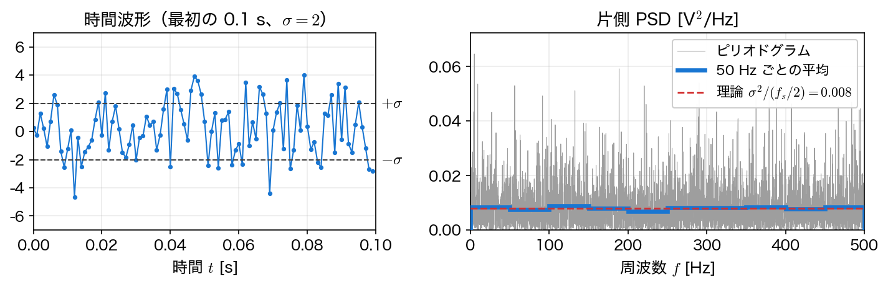
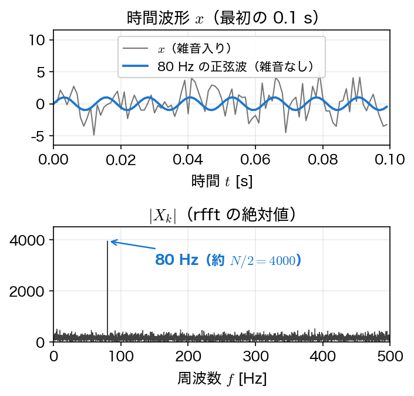
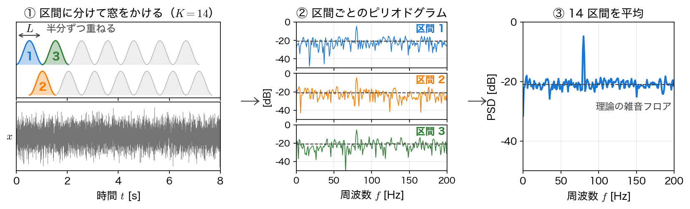
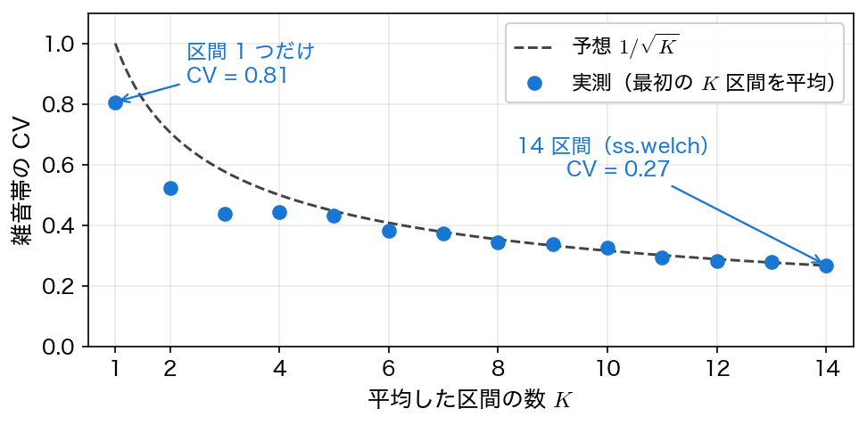
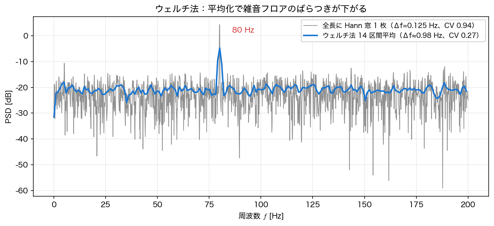
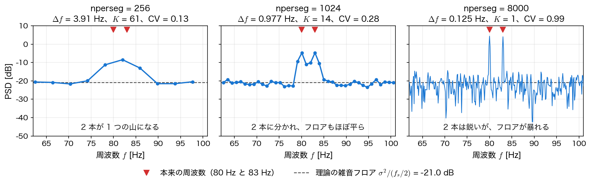
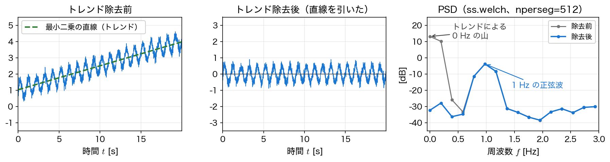

ピリオドグラムとウェルチ法
前ページでは決定的な（雑音のない）信号の漏れを扱った。本ページでは 雑音を含む 信号のスペクトルをどう見積もるかを考える。素朴な方法（ピリオドグラム）の弱点を確かめ、それを克服する ウェルチ法 を導入する。
ピリオドグラム
長さ \(N\) の信号の FFT から直接作った PSD の推定値 \(\hat S_{xx}(f_k)\)（前ページの式）を ピリオドグラム（periodogram） と呼ぶ。
最も素朴な PSD 推定だが、雑音に対してばらつき（分散）が大きく、\(N\) を増やしても減らない。\(N\) を増やすと周波数の刻みは細かくなるが、各点のばらつきは大きいまま ── スペクトルはいつまでもギザギザのままである。
白色雑音
すべての周波数に一様に広がる雑音を 白色雑音 という。平均 \(0\) の乱数を各サンプルで独立に引いた列は白色雑音になる。sigma * rng.standard_normal(N) は標準偏差 \(\sigma\) の白色雑音である。
白色雑音の平均電力 \(\sigma^2\) は \(0\)〜\(f_s/2\) に一様に広がる。PSD に \(\Delta f\) を掛けて全周波数で足すと平均電力 \(\overline{x^2}=\sigma^2\) になる（前ページの式）ので、片側 PSD の高さは
である。雑音だけの帯域での PSD の高さを 雑音フロア と呼ぶ。\(\sigma=2\)、\(f_s=1000\) Hz なら \(4/500=0.008\ \text{V}^2/\text{Hz}\)（\(-21.0\) dB）になる。

ばらつきを変動係数で測る
値のばらつきを、平均に対する比で表したものを 変動係数（Coefficient of variation; CV）という。
CV が \(1\) なら、値が平均と同じ程度に上下している。NumPy では P.std() / P.mean() と書ける。
振幅 \(1\)、周波数 \(80\) Hz の正弦波に上の白色雑音（\(\sigma=2\)）を足し、雑音フロアの CV を測る。
rng = np.random.default_rng(0)
fs, T = 1000.0, 8.0
N = int(fs * T)
t = np.arange(N) / fs
sigma = 2.0 # 白色雑音の標準偏差
x = np.sin(2*np.pi*80*t) + sigma * rng.standard_normal(N)
X = np.fft.rfft(x)
freq = np.fft.rfftfreq(N, 1/fs)
P = np.abs(X)**2 / (fs * N) # ピリオドグラム（両側）
P[1:-1] *= 2 # DC・ナイキスト以外を 2 倍
band = (freq > 50) & (freq < 110) & (np.abs(freq - 80) > 3)
print(f"雑音帯の変動係数 CV = {P[band].std()/P[band].mean():.3f}")
band は、\(80\) Hz の近傍を除いた \(50\)〜\(110\) Hz の雑音帯である。

- 変動係数が約 \(1\) ── 雑音フロアの推定値が、平均と同じ程度に暴れている
- \(80\) Hz のピークは雑音より十分強いので、このままでも見える
- しかし雑音フロアの高さ（雑音の強さ）は、値が定まらず読み取れない
ウェルチ法
ウェルチ法（Welch's method）は、1 本の記録から次の手順で PSD を推定する。
- 信号を長さ \(L\) の区間に分ける（ふつう半分ずつ重ねて区間数を稼ぐ）
- 区間ごとに窓関数（Hann 窓など）をかけ、ピリオドグラムを計算する
- 全区間のピリオドグラムを平均する

ss.welch の結果と一致する。破線は理論の雑音フロア $\sigma^2/(f_s/2)$（約 $-21$ dB。上の「白色雑音」で導いた）。② の上下は、向きが区間ごとにばらばらなので、平均すると打ち消し合う（③）。\(K\) 個の独立な値を平均すると、分散は \(1/K\) 倍、標準偏差は \(1/\sqrt K\) 倍になる。ピリオドグラム 1 枚の CV は約 \(1\) なので、\(K\) 区間の平均の CV は約 \(1/\sqrt K\) である。

import scipy.signal as ss とすると、ss.welch がこの手順を実装している。nperseg は 1 区間の長さ \(L\) で、重なりは既定で 50% である。
import scipy.signal as ss
f_w, P_w = ss.welch(x, fs=fs, window='hann', nperseg=1024)
band_w = (f_w > 50) & (f_w < 110) & (np.abs(f_w - 80) > 3)
Pb = P_w[band_w]
print(f"Welch の変動係数 CV = {Pb.std()/Pb.mean():.3f}")
print(f"ピーク周波数 = {f_w[P_w.argmax()]:.1f} Hz (真値 80Hz)")
- 変動係数が \(1.04\to0.27\) へ下がった（分散にして約 \(15\) 倍の低減）
- \(8\) s の信号を
nperseg=1024（\(1.024\) s）で 50% 重ねると、\(K=14\) 区間とれる - ばらつきの予想 \(1/\sqrt{K}=1/\sqrt{14}\approx0.27\) とよく合う
- 雑音フロアが平らになり、その高さが読み取れるようになる。ピークも \(80.1\) Hz と正しく読める
区間に分けずに、全長 \(8\) s に Hann 窓を 1 枚かけてもばらつきは減らない。同じ \(x\) で比べると次のようになる。
| 周波数の刻み \(\Delta f\) | 雑音帯の CV | |
|---|---|---|
| 全長、矩形窓（上のピリオドグラム） | \(0.125\) Hz | \(1.04\) |
| 全長、Hann 窓 1 枚 | \(0.125\) Hz | \(0.94\) |
ウェルチ法（nperseg=1024、14 区間） |
\(0.98\) Hz | \(0.27\) |
窓は漏れを抑えるが、ピリオドグラム 1 枚の各ビンが乱数のように上下することは変わらない。ばらつきを下げるのは平均であり、その代わりに刻みが粗くなる。下の図の灰色が全長に Hann 窓 1 枚の場合である。

雑音フロアから SNR を読む
信号の平均電力と雑音の平均電力の比を 信号対雑音比（Signal-to-noise ratio; SNR）という。振幅 \(A=1\) の正弦波と \(\sigma=2\) の白色雑音なら
である。ウェルチ法の PSD からも、PSD に \(\Delta f\) を掛けて足すと平均電力になることを使って読める。雑音の平均電力は、雑音フロアに帯域の幅 \(f_s/2\) を掛けた値である。信号の平均電力は、\(80\pm3\) Hz のピークを足し、フロアの分を引いた値である。
def dB(p):
"""パワー（または比）をデシベル 10 log10 で表す"""
return 10 * np.log10(p)
floor = Pb.mean() # 雑音フロア（雑音帯の平均）
df = f_w[1] - f_w[0]
peak = np.abs(f_w - 80) <= 3
sig_pow = np.sum(P_w[peak] - floor) * df # ピークを足し、フロアの分を引く
noise_pow = floor * fs / 2 # フロア × 帯域の幅 fs/2
snr = sig_pow / noise_pow
print(f"雑音フロア = {floor:.6f} = {dB(floor):.2f} dB (理論 0.008)")
print(f"信号の平均電力 = {sig_pow:.2f} (理論 0.5)")
print(f"雑音の平均電力 = {noise_pow:.2f} (理論 4)")
print(f"SNR = {snr:.3f} = {dB(snr):.1f} dB (理論 -9.0 dB)")
雑音フロア = 0.008227 = -20.85 dB (理論 0.008)
信号の平均電力 = 0.48 (理論 0.5)
雑音の平均電力 = 4.11 (理論 4)
SNR = 0.118 = -9.3 dB (理論 -9.0 dB)
- 読んだ比は \(0.118\)（\(-9.3\) dB）で、理論の \(-9.0\) dB とよく合う
- SNR は \(1\) より小さく、波形では正弦波が雑音に埋もれている（上の \(x\) と \(X\) の図）。それでもピークがフロアより \(16\) dB 高く立つのは、雑音の電力は \(0\)〜\(500\) Hz に散り、信号の電力は \(80\) Hz の近くに集まるからである
分解能と分散のトレードオフ
ばらつきを下げるには、区間を多く（＝1 区間を短く）したい。しかし区間が短いほど、周波数の刻み \(\Delta f=f_s/L\) は粗くなる。nperseg を大きくすると刻みは細かくなるが、平均する区間数が減ってばらつきが増える。近い 2 本の正弦波で nperseg を変えると、このトレードオフが見える。

ss.welch（Hann 窓、50% 重なり）で nperseg を変えて計算した。赤の ▼ は本来の周波数、破線は理論の雑音フロア。CV は雑音だけの $150$〜$450$ Hz で測った。nperseg=256：\(K=61\) 区間を平均するので CV は \(0.13\) と小さいが、\(\Delta f=3.9\) Hz が 2 本の間隔 \(3\) Hz より粗く、2 本が 1 つの山になるnperseg=1024：\(\Delta f=0.98\) Hz で 2 本の間に谷ができ、\(K=14\) で CV も \(0.28\) にとどまるnperseg=8000（全長 1 区間）：\(\Delta f=0.125\) Hz で 2 本は鋭いが、平均しないので CV は \(0.99\) になり、雑音フロアが暴れる
近い 2 つの周波数を分けたいか、雑音フロアを平らにしたいかで nperseg を選ぶ。
実際に 2 本のピークを分けられるかは、窓のメインローブの幅で決まる。Hann 窓のメインローブは零点の間で \(4\) ビンあるので、\(\Delta f\) の数倍の間隔が要る。上の nperseg=1024 では、間隔 \(3\) Hz が \(\Delta f\) の約 \(3\) 倍にあたる。
トレンド除去
測定値には、ゆっくりしたずれや傾き（トレンド）が乗ることが多い。PSD を求める前にこれを引く処理を トレンド除去 という。

ss.welch（Hann 窓、nperseg=512）の PSD。灰色は何も引かずに、青は区間ごとに直線を引いてから求めた。$0.8$ Hz より上では 2 本が重なる。- トレンドが残ると、\(0\) Hz の近くに大きな山が立ち、低い周波数の成分を覆い隠す
- この例では、\(0\) Hz の山が \(1\) Hz のピークより約 \(17\) dB 高い
図の例のデータは次のように作る。前の \(80\) Hz の例とは別の記録なので、fs などを作り直す。
rng = np.random.default_rng(3)
fs, T = 100.0, 20.0
N = int(fs * T)
t = np.arange(N) / fs
sigma = 0.15 # 白色雑音の標準偏差
trend = 1.0 + 0.15 * t # 直線のトレンド
x = trend + 0.5*np.sin(2*np.pi*1*t) + sigma*rng.standard_normal(N)
ss.welch は、区間ごとにトレンドを引いてから窓をかける。引き方は detrend で選ぶ。
# 既定は detrend='constant'（区間の平均を引く）
f_w, P_c = ss.welch(x, fs=fs, nperseg=512)
# 区間の最小二乗の直線を引く
f_w, P_l = ss.welch(x, fs=fs, nperseg=512, detrend='linear')
# 何も引かない
f_w, P_n = ss.welch(x, fs=fs, nperseg=512, detrend=False)
- 既定は
detrend='constant'（平均を引く）なので、直流成分は消える。直流も見たいときはdetrend=False - 傾きもあるときは
detrend='linear'を使う。上の図の右の青はこれである
上の例で既定の 'constant' を使うと、区間の中の傾きが残り、\(0.2\) Hz のビンに \(-12\) dB の山が残る。
まとめ
- ピリオドグラム は素朴な PSD 推定だが、雑音に対し ばらつき（分散）が \(N\) で減らない（CV≈1 のギザギザ）。
- ウェルチ法：区間分割＋窓＋平均で分散を約 \(1/K\) に下げる（14 区間で CV \(1.04\to0.27\)）。代償は分解能 \(\Delta f=f_s/L\) の低下 ── 分解能 vs 分散 のトレードオフ。
- PSD に \(\Delta f\) を掛けた和は 平均電力（パーセバル）。信号の平均電力 \(A^2/2\) と、白色雑音 の雑音フロア \(\sigma^2/(f_s/2)\) から SNR が読める。
- 実装は
scipy.signal.welch。npersegで分解能とばらつきを選ぶ。既定で区間ごとに平均を引く（トレンド除去）ので、直流成分は消える。
本講義との接続
スペクトル解析は計測・信号処理の標準的な前処理になる。次ページでは、その応用として周波数領域での フィルタリング を扱う。本回までは「スペクトルが時間とともに変わらない（定常）」と仮定したが、時間変化する信号には 第9回 短時間フーリエ変換（STFT）とスペクトログラムが要り、分解能を周波数ごとに変えられるよう発展させたのが 第10回 ウェーブレット変換 である。PSD と電力の考え方は 特異値分解・動的モード分解（第13〜14回）でのモードのエネルギー評価にもつながる。